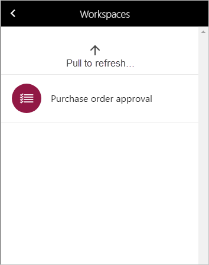

Mobiler Arbeitsbereich für Bestellungsgenehmigung
Important
Dynamics 365 for Finance and Operations hat sich zu speziell entwickelten Anwendungen entwickelt, mit denen Sie bestimmte Geschäftsfunktionen verwalten können. Weitere Informationen zu diesen Änderungen finden Sie im Dynamics 365-Lizenzierungshandbuch.
Dieses Thema enthält Informationen zur Bestellungsgenehmigung im mobilen Arbeitsbereich. In diesem Arbeitsbereich können Sie Bestellungen anzeigen und auf sie antworten. Sie können beispielsweise eine Bestellung genehmigen oder ablehnen.
Überblick
Bestellungen, die Genehmigungen erfordern, durchlaufen einen Genehmigungsworkflow. Der Workflow kann unterschiedliche Schritte umfassen, die erfordern, dass mindestens eine Person eine Maßnahme ergreift. Beispielsweise kann eine Person eine Aufgabe abschließen oder die Bestellung genehmigen.
Im Arbeitsbereich mobile Bestellungsgenehmigung können Sie Bestellungen vom mobilen Gerät anzeigen und beantworten. Im Arbeitsbereich können Sie die gleichen Workflowaktivitäten tätigen, die Sie vom Webclient aus tätigen können.
Voraussetzungen
Die Voraussetzungen unterscheiden sich basierend auf der Version von Supply Chain Management, die für Ihre Organisation bereitgestellt wurde.
Voraussetzungen, wenn Sie verwenden Supply Chain Management
Wenn Supply Chain Management für Ihre Organisation bereitgestellt wurde, muss der Systemadministrator den mobilen Arbeitsbereich Bestellungsgenehmigung veröffentlichen. Anweisungen finden Sie unter Einen mobilen Arbeitsbereich veröffentlichen.
Voraussetzungen, wenn Sie Microsoft Dynamics 365 for Operations Version 1611 mit Plattformupdate 3 oder höher verwenden
Wenn Microsoft Dynamics 365 for Operations Version 1611 mit Plattformupdate 3 oder höher für Ihre Organisation bereitgestellt wurde, muss der Systemadministrator die folgenden Voraussetzungen erfüllen.
| Voraussetzung | Rolle | Beschreibung |
|---|---|---|
| Implementieren Sie KB 4017918. | Systemadministrator | 4017918 KB ist ein X++-Aktualisierungs- oder -Metadatenhotfix, der den mobilen Arbeitsbereich Bestellungsgenehmigung enthält. Um KB 4017918 muss Ihr Systemadministrator folgende Schritte ausführen.
|
| Mobiler Arbeitsbereich für Bestellungsgenehmigung veröffentlichen. | Systemadministrator | Siehe Einen mobilen Arbeitsbereich veröffentlichen. |
Herunterladen und Installieren der mobilen App
Herunterladen und Installieren der Finance and Operations mobilen App:
Bei der mobile App anmelden
- Starten Sie die App auf Ihrem mobilen Gerät.
- Geben Sie die Microsoft Dynamics 365-URL ein.
- Bei der erstmaligen Anwendung werden Sie nach Ihrem Benutzernamen und dem Kennwort gefragt. Geben Sie Ihre Anmeldeinformationen ein.
- Nachdem Sie sich angemeldet haben, werden verfügbare Arbeitsbereiche für Ihr Unternehmen angezeigt. Beachten Sie, dass Sie, wenn Ihr Systemadministrator einen neuen Arbeitsbereich später veröffentlicht, die Liste der mobilen Arbeitsbereiche aktualisieren müssen.

Anzeigen der Ihnen zugewiesenen Aufträge
- Wählen Sie auf Ihrem mobilen Gerät den Arbeitsbereich Bestellungsgenehmigung.
- Wählen Sie Mir zugewiesene Aufträge, um alle Bestellungen anzeigen, für die Sie angefordert wurden, im Bestellungsgenehmigungsworkflow aktiv zu werden.
- Wählen Sie einen Auftrag aus. Auf der Seite Auftragsdetails finden Sie die Angaben im Auftragskopf und Positionen. Sie sehen auch Richtlinien für die Workflowaufgabe.
- Wählen Sie Buchhaltungsverteilungen, um die Seite Kopfbuchhaltungsverteilungen zu öffnen.
- Hiermit kehren Sie zur Seite Auftragsdetails zurück, und wählen Sie eine Position aus. Aus den Auftragspositionsdetails können Sie auch positionsspezfische Buchhaltungsverteilungen untersuchen.
Verbinden einer Aktivität auf der Bestellung
Nachdem die Bestellung angezeigt wurde, die Ihnen zugewiesen wurde und Sie die Workflowanweisungen gelesen haben, sollten Sie bereit sein, die Ihnen zugewiesenen Aktivitäten auszuführen.
Wählen Sie auf Ihrem mobilen Gerät den Arbeitsbereich Bestellungsgenehmigung.
Wählen Sie Mir zugewiesene Aufträge, um alle Bestellungen anzeigen, für die Sie angefordert wurden, im Bestellungsgenehmigungsworkflow aktiv zu werden.
Wählen Sie einen Auftrag aus, um die Details anzuzeigen.
Wählen Sie Aktivitäten aus, um die verfügbaren Aktivitäten anzuzeigen. Die Aktivitäten, die verfügbar sind, hängen von der Aufgabe ab, die Ihnen zugewiesen wurde.
Aufgabenaktivität Genehmigungsaktivität Komplett Genehmigen Zurück Ablehnen Änderung anfordern Änderung anfordern Delegat Delegat Wählen Sie die entsprechende Aktivität aus.
Auf der Seite Aufgabe beenden geben Sie einen Kommentar ein. Beachten Sie, dass, wenn Sie die Aktivität Delegieren auswählen, müssen Sie einen Benutzer auswählen, an die Aufgabe delegiert werden soll.
Wählen Sie Fertig. Nachdem Sie den Arbeitsbereich aktualisiert haben, ist die Bestellung nicht mehr in der Liste.